Be patient💱
基础知识数理
计算机对数据进行处理、运算的过程中有两个基本的问题：
- 所要处理的数据放在是什么地方
- 所要处理的数据有多长
这两个问题的答案在机器指令中必须给以明确或隐含的说明。
为了对问题研究的方便，我们定义了两个描述性符号：
reg——>寄存器
sreg——>段寄存器
reg 的集合包括
- ax、ah、al 临时存放一些数据
- bx、bh、bl bp si、di 都用于表示偏移地址
- cx、ch、cl 控制 loop 循环的次数
- dx、dh、dl 数据寄存器
- sp 指向栈底指针的偏移地址
sreg 的集合包括
- ds 数据段的段地址
- ss 栈的栈段
- cs 代码段的段地址
- es 附加段寄存器
用于表示偏移地址的 bx、si、di、bp 所有正确的用法
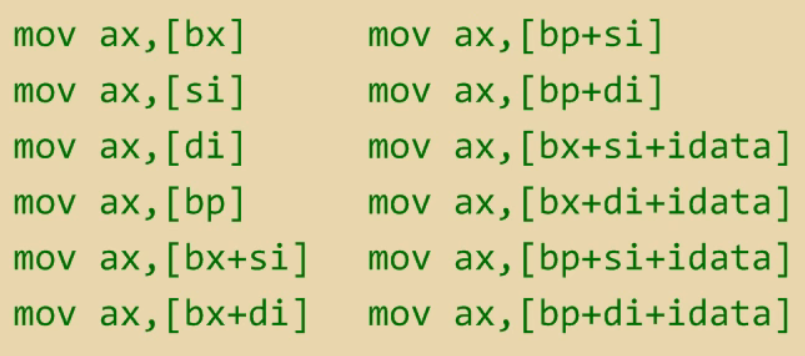
我们可以将 bx 和 bp 理解为基本偏移地址寄存器，si 和 di 是用于灵活改变、使用这两个基本偏移地址寄存器的辅助偏移地址寄存器。
- bx 的默认段地址为 ds 中的数值
- bp 的默认段地址为 ss 中的数值
寻址
一个指令在执行前，指令所涉及的数据可以储存在3个地方：CPU内部、内存、端口
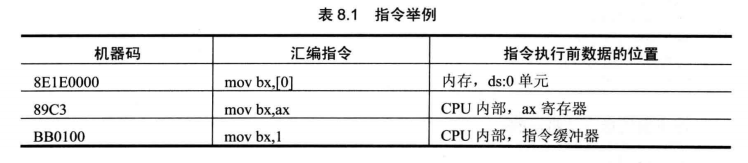
数据位置表达的三个概念
有3种概念来表达数据的位置：立即数(idata)、寄存器、段地址和偏移地址
-
立即数
在机器指令中直接给出的数据

-
寄存器
指令要处理的数据在寄存器中，在指令中指明了相应的寄存器名称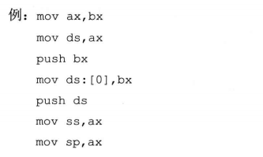
-
段地址(SA)和偏移地址(EA)
所要处理的数据在内存中，用 [x] 方式给出 EA，SA 为某个段的寄存器
- 默认段地址在 ds 中
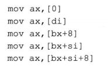
-
默认段地址在 ss 中
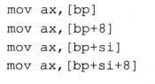
-
指明段地址
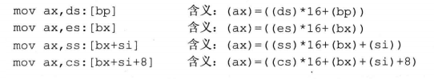
寻址方式
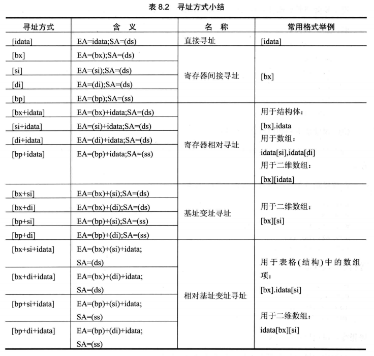
指令执行过程
- 在寄存器的 cs 和 ip 中获取代码段在内存中的地址
- 读取指令
- 将指令放入指令缓冲寄存器
- 获取指令中涉及的相关数据
- 执行指令
其中获取指令的相关数据时涉及到了寻址
处理数据的长度
8086CPU 的指令能够处理两种数据的长度
- byte
- word
其中 byte 占一个字节，word 占两个字节
有两种方式告诉计算机所要执行的指令长度
- 寄存器
- X ptr
寄存器指明
因为寄存器自带具有多少个字节的属性，因此计算机可以直接通过寄存器获取所要处理数据的长度
-
对字进行操作
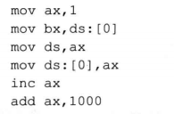
-
对字节进行操作
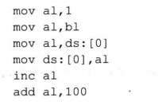
X ptr 指明
-
对字进行操作
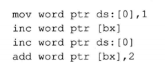
-
对字节进行操作
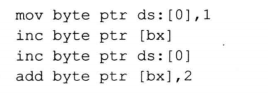
div 指令
除法指令，使用时的注意点：
- 除数：有8位和16位2种选择，位于 reg 或内存单元中
- 被除数：默认放在 AX 或 DX 和 AX 中。
- 除数为8位，被除数为16位，默认存储在 AX 中
- 除数为16位，被除数为32位，默认高位存储在 DX 中，低位放在 AX 中
- 结果：余数和商
- 除数为8位，AL 中存储商，AH 中存储余数
- 除数为16位，AX 中存储商，DX 中存储余数
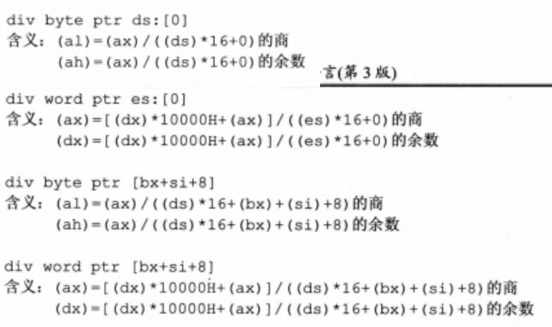
dd 伪指令
之前使用过 db 和 dw 来定义字节型数据和字型数据，dd 用来定义 双字型数据(double word)，dd 所定义的数据占了2个字的大小，也就是4个字节。
1 | data segment |
举个例子：
使用 div 计算 data 段中第一个数据除以第二个数据后的结果，商储存在第三个数据的存储单元内
1 | data segment |
dup
dup 是一个操作符。
dup、db、dw、dd 都是由编译器识别处理的符号。
通常和 db、dw、dd 等数据定义伪指令配合使用，用来进行数据的重复
例如：
1 | db 3 dup(0) //定义了3个字节，值都为0，相当于 db 0,0,0 |
使用的格式如下：
- db 重复的次数 dup (重复的字节型数据)
- dw 重复的次数 dup (重复的字型数据)
- dd 重复的次数 dup (重复的双字型数据)
本文作者：GhDemi
本文链接： https://ghdemi.github.io/2022/05/28/%E6%95%B0%E6%8D%AE%E7%9A%84%E5%A4%84%E7%90%86/
文章默认使用 CC BY-NC-SA 4.0 协议进行许可，使用时请注意遵守协议。